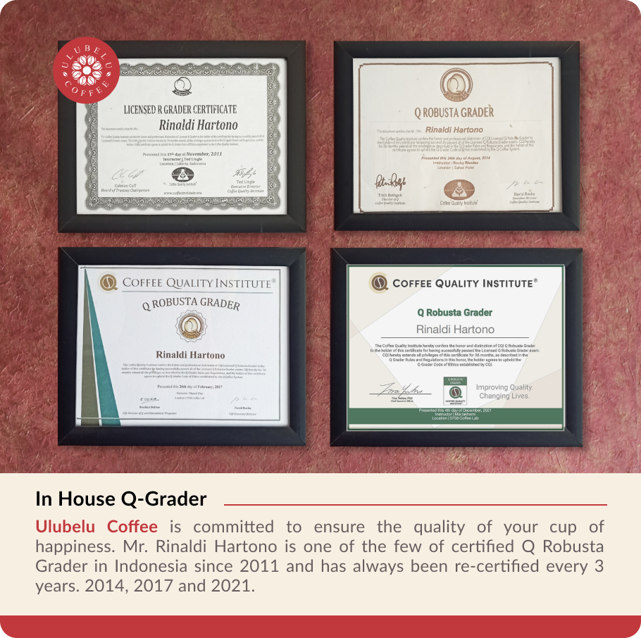
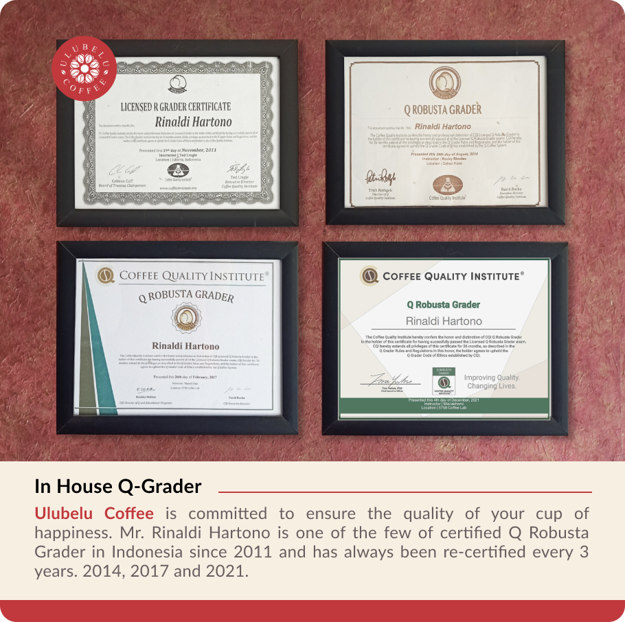
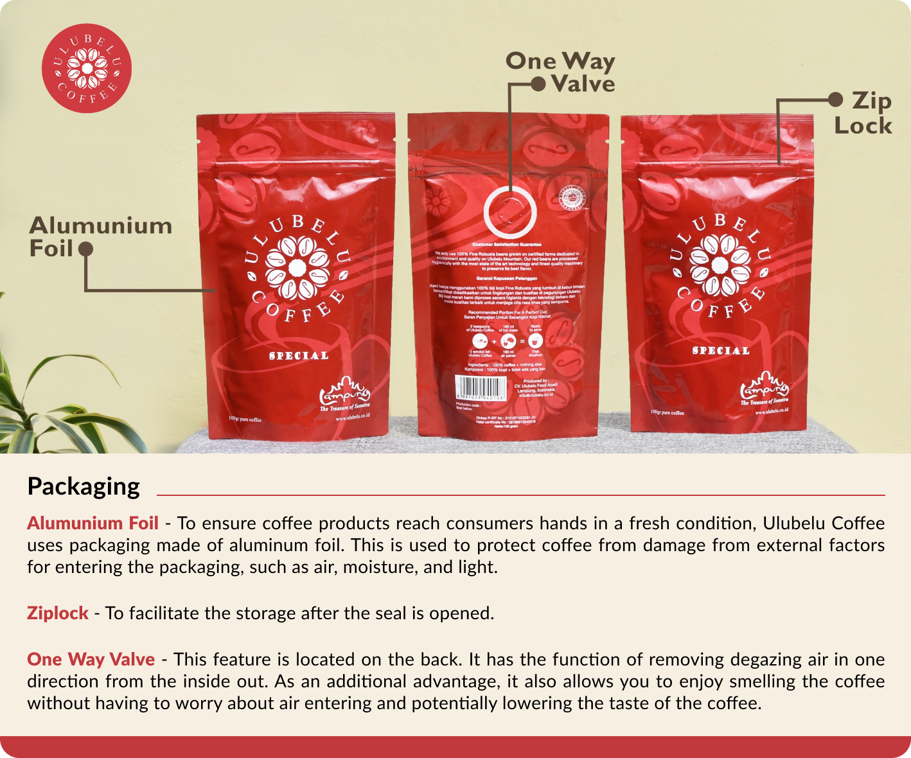
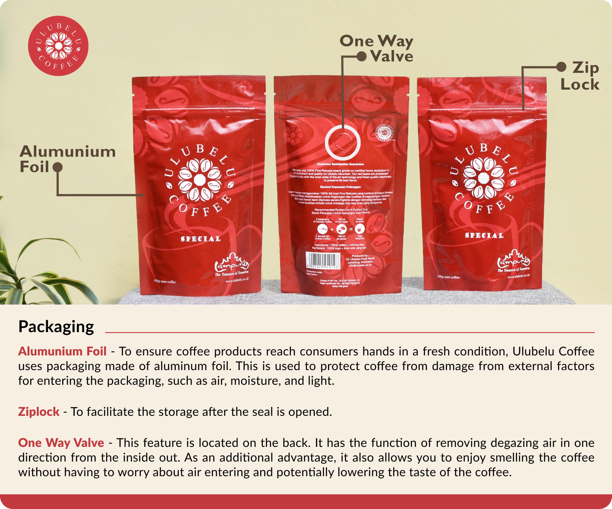
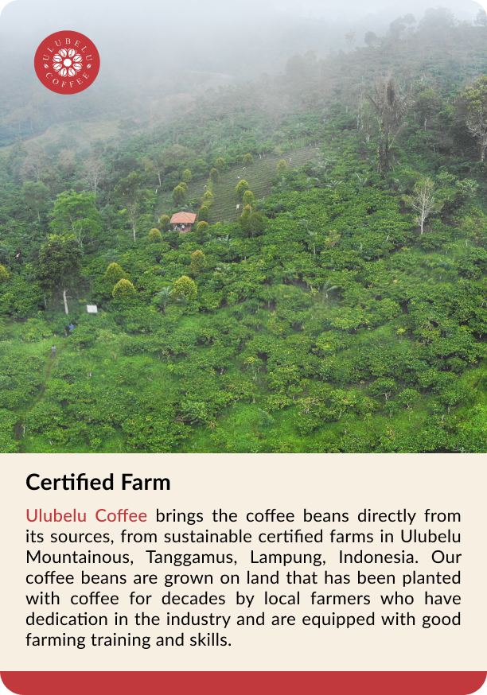
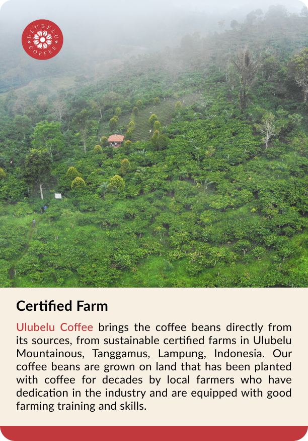
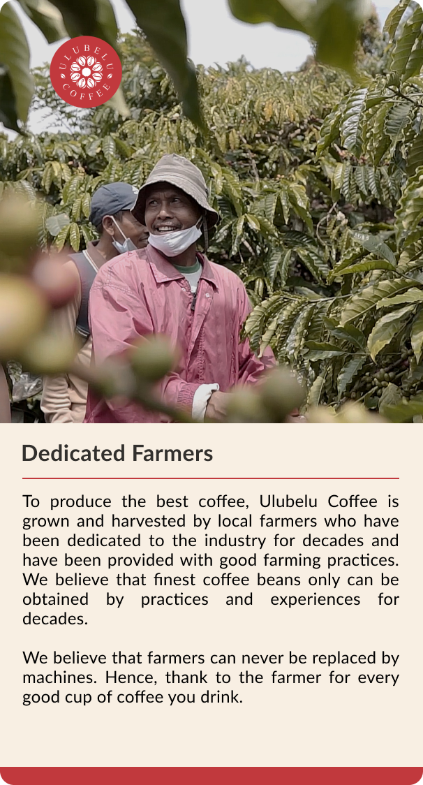
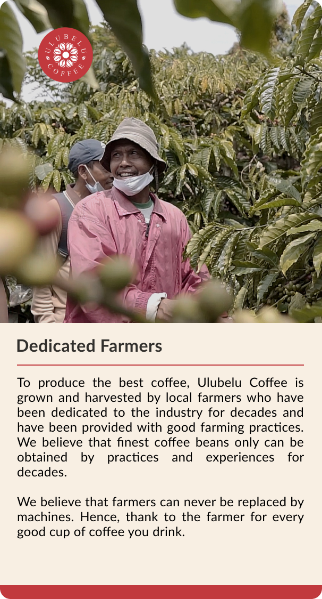

ULUBELU COFFEE
Bringing you the coffee beans directly from its sources, Ulubelu Mountainous, Lampung, Indonesia. We present you with the finest robusta coffee grown and harvested by the local farmers in Lampung who had dedication in the industry for decades.
Fresh coffee beans with a strong aroma is just one of the specialties from Ulubelu Coffee. To maximize the rich flavor of each coffee bean, Ulubelu Coffee has adhered to the best environmental practice for processing them in the most sustainable manner. Since 2012, Ulubelu Coffee has been awarded with Certification as well accreditation from the National Ministry of Environment and Forestry of Indonesia.
With Halal certification and an in-house R-Grader, all batches have been processed thoroughly for quality control. Only the most excellent coffee will be refined to be our Grade 1 Single Origin Robusta Ulubelu Coffee.
We hope that Ulubelu Coffee will be able to represent the unique taste and aroma of Lampung Coffee that is second to none. Enjoy! Contact Us!
Kami mempersembahkan biji kopi yang berasal langsung dari sumbernya, pegunungan Ulubelu, Lampung, Indonesia. Kopi Robusta murni yang ditanam dan dipanen oleh petani lokal di Lampung yang sudah berdedikasi pada industri ini puluhan tahun lamanya.
Biji kopi segar dengan aroma yang kuat merupakan salah satu ciri khas dari Ulubelu Coffee. Untuk memaksimalkan cita rasa dari setiap biji kopi, kami telah berkomitmen pada praktik sustainability ‘kopi lestari kopi berkelanjutan’ untuk memprosesnya dengan cara terbaik. Sejak 2012, Ulubelu Coffee telah memiliki sertifikasi dan akreditasi oleh Kementerian Lingkungan Hidup dan Kehutanan Republik Indonesia.
Dengan management sertifikasi halal dan inhouse R Grader, semua tahapan telah melalui proses pengecekan kualitas yang terjamin. Hanya kopi terbaiklah yang akan disempurnakan menjadi Grade 1 Single Origin Robusta Ulubelu Coffee.
Kami harap Ulubelu Coffee dapat mewakili cita rasa dan aroma khas kopi Lampung yang tiada tanding. Enjoy! Hubungi Kami
Jual Kopi Bubuk
Kopi hitam
Kopi Robusta Lampung
kopi hitam adalah
Kopi Hitam
kopi bubuk adalah
Kopi Bubuk
kopi 100gr
Jual Kopi Robusta
kopi hitam murni
Kopi pagi
kopi pagi hari
Jual kopi bubuk
kopi hitam manis
Jual kopi Lampung
kopi asli lokal
Jual Kopi Robusta
petani kopi
Jual kopi Indonesia
kopi lokal
kopi
beli kopi hitam
kopi pilihan
kopi tanggamus
kopi rakyat
Toko kopi
toko kopi bandarlampung
jual kopi bandarlampung
toko kopi lampung
kopi bandarlampung
cara buat kopi
kopi seduh
kopi tradisional
cara menyeduh kopi
kopi tubruk
kopi pilihan
kopi dalam kemasan
kopi giling bubuk
jual kopi shopee
jual kopi tokopedia
koi nikmat
kopi sehat
100 gram kopi bubuk
rekomendasi kopi
jual produk kopi disini
produk kopi bubuk
jual roasted coffee
Indonesian Coffee
kopi laris
produk kopi terlaris di Tokopedia
jual kopi lanang lampung
kopi lanang
About Us
Ulubelu Coffee was founded in 2012, with the passion to market Lampung Coffee to domestic and international consumers. After working for three generations in the last decades, we believe that the quality of Lampung Coffee, especially from the Ulubelu mountains, is unmatched.
Various experiments and taste trials have been carried out, and with a wide variety of coffee choices in the Ulubelu Coffee window, we are sure that there will be a match for the taste buds of the original coffee-loving community. There are no other additives in Ulubelu Coffee, only 100% coffee that has been hygienically processed and meets existing international quality standards. We hope that Ulubelu Coffee will be able to represent the unique taste and aroma of Lampung Coffee that is second to none. Enjoy!
The root of the company started as early as the 1940s by a hard working individual who lived in Talang Padang and bought and sold tiny quantities of coffee in its surroundings, including Ulubelu Mountainous area. Due to strong alliances with local farmers, the healthy relationships soon bloomed and Ulubelu Coffee is established on 2011.
We hold pride in our professionalism and in the integrity we have had for decades in operating in the industry. We utilize modern technology while maintaining the traditional method when applicable. In addition to being dedicated to quality, we are also devoted to preserving the environment, as well as maintaining the flourished relationships with customers, suppliers, and workers. We realize our powerful potential to utilize our resources, and we contend to be the best supplier for coffee of your choice.
Various experiments and taste trials have been carried out, and with a wide variety of coffee choices in the Ulubelu Coffee window, we are sure that there will be a match for the taste buds of the original coffee-loving community. There are no other additives in Ulubelu Coffee, only 100% coffee that has been hygienically processed and meets existing international quality standards.Fresh coffee beans with strong aroma is just one of the specialties from Ulubelu Coffee. Caffeine junie should be ready to taste the original Robusta coffee with the distinction dark chocolate and nutty taste.
To prove our commitment, we hold Coffee Exporter Registered licence, Circulation certificate from the health office of Lampung province, Certificate by Indonesia Trade.
Perusahaan kami dirintis sejak 1940-an oleh seorang pekerja keras yang tinggal di Talang Padang dan melakukan jual beli sejumlah kecil kopi di sekitar tempat tinggalnya, termasuk daerah Pegunungan Ulubelu. Berkat kerjasama yang kuat dengan petani lokal, terciptalah hubungan yang baik dan berdirilah Ulubelu pada tahun 2011.
Kami memegang teguh sikap profesionalisme dan integritas yang sudah kami miliki selama puluhan tahun selama beroperasi di dalam industri ini. Kami memanfaatkan teknologi
modern tetapi tetap mempertahankan metode tradisional dalam pengaplikasiannya. Selain berdedikasi demi kualitas, kami juga mengabdikan diri dalam menjaga kelestarian lingkungan sebagaimana kami menjaga hubungan baik dengan para pelanggan, pemasok dan pekerja. Kami sadar akan potensi kuat kami untuk memanfaatkan sumber daya yang kami miliki, dan kami berkomitmen untuk menjadi supplier kopi terbaik untuk anda.
Kami telah melakukan berbagai eksperimen dan uji citarasa untuk menghasilkan beberapa ragam pilihan cita rasa kopi murni Ulubelu Coffee untuk penikmat kopi. Tidak ada zat adiktif lain, hanya 100% kopi murni yang diproses secara higienis serta memenuhi standar kualitas internasional. Biji kopi segar dengan aroma yang kuat hanya salah satu specialties dari kopi kami. Penikmat kafein harus siap mencicipi kopi Robusta asli dengan cita rasa dark chocolate dan nutty yang khas.
Untuk membuktikan komitmen kami, kami telah memiliki lisensi Coffee Exporter, ijin edar dari dinas kesehatan provinsi Lampung, sertifikat dari Kementerian Perdagangan Indonesia, dan sertifikat Halal. Kami juga memiliki in-house R-Grader dan Star Cupper untuk memastikan kualitas biji dan cita rasa kopi.
Certified Farm
Ulubelu Coffee brings the coffee beans directly from its sources, from sustainable certified farms in Ulubelu Mountainous, Tanggamus, Lampung, Indonesia. Our coffee beans are grown on land that has been planted with coffee for decades by local farmers who have dedication in the industry and are equipped with good farming training and skills.
Ulubelu Coffee menyajikan biji kopi langsung dari sumbernya, dari perkebunan bersertifikat sustainable di pegunungan Ulubelu, Tanggamus, Lampung, Indonesia. Biji kopi kami ditanam di daerah yang sudah ditanami kopi selama puluhan tahun oleh petani lokal yang sudah berdedikasi di industri ini dan telah dibekali dengan pelatihan dan ketrampilan yang baik.
100% Fine Robusta Beans
We only use 100% Fine Robusta beans grown on certified farms of Ulubelu Mountain. Our red beans are hygienically processed with the latest state of the art technology, resulting in the finest quality of coffee beans with the natural flavor preserved.
Ulubelu Coffee hanya menggunakan 100% fine Robusta yang berasal dari perkebunan bersertifikat di Pegunungan Ulubelu. Kami memproses biji kopi pilihan secara higienis menggunakan teknologi mutakhir untuk mempersembahkan biji kopi kualitas terbaik dengan cita rasa alami
Packaging
Alumunium Foil - To ensure coffee products reach consumers hands in a fresh condition, Ulubelu Coffee uses packaging made of aluminum foil. This is used to protect coffee from damage from external factors for entering the packaging, such as air, moisture, and light.
Ziplock - Allows the packaging to be opened and closed again to facilitate the storage after the seal is opened.
One Way Valve - This feature is located on the back. It has the function of removing degazing air in one direction from the inside out. As an additional advantage, it also allows you to enjoy smelling the coffee without having to worry about air entering and potentially lowering the taste of the coffee.
Alumunium Foil - Pemilihan bahan alumunium foil adalah untuk memastikan kondisi kopi tetap terjaga baik dan segar hingga ke tangan konsumen. Aluminium foil dapat melindungi kopi dari kerusakan yang disebabkan faktor luar, misalnya udara, kelembaban dan cahaya.
Ziplock - Fitur kemasan yang dapat dibuka dan ditutup kembali untuk memudahkan penyimpanan setelah segel dibuka.
One Way Valve - Terletak pada bagian belakang kemasan. Memiliki fungsi mengeluarkan gas yang timbul setelah kopi di roasting secara satu arah dari dalam ke luar. Keunggulan lain dari fitur ini adalah memungkinkan anda untuk mencium aroma kopi tanpa perlu khawatir adanya udara masuk dan berpotensi menurunkan cita rasa kopi.
Ulubelu Limited
Fine Robusta beans, with no defects. Such a unique flavour of fine Robusta, a very special one. Taste the sweet hazelnut flavour and sensation of smooth Robusta acidity, mimicking Arabica. Definitely a very special one.
Cupping quality is ensured by the internal Q-Robusta Grader, that only the best coffee will be refined into a specialty coffee, Ulubelu Limited.
Berbahan dasar biji Robusta murni, tanpa ‘defect’/cacat. Sebuah rasa Robusta murni yang sangat unik dan sangat istimewa. Keunikan dari Ulubelu Limited adalah campuran dari manisnya rasa hazelnut dan sensasi keasaman Robusta yang lembut, seperti Arabica. Pastinya cita rasa yang paling spesial diantara varian Ulubelu Coffee lainnya.
Kualitas tes cita rasa terjamin oleh internal Q-Robusta Grader yang bersertifikat internasional, bahwa hanya kopi terbaik yang akan disempurnakan/diolah menjadi kopi specialty, Ulubelu Limited.
Proses pembuatan kopi
Proses from seeds to cups
Planting
Benih biji kopi ditanam di tempat yang teduh selama musim hujan untuk menjaga kelembaban tanah dengan baik sampai akarnya menjadi cukup kuat.
Harvesting
Pohon kopi membutuhkan waktu sekitar tiga hingga empat tahun untuk menghasilkan buah yang berbentuk sempurna. Buah yang sudah matang dan siap dipetik tangan ditandai dengan warna yang kemerahan.
Processing
Setelah dipetik, biji kopi akan dikeringkan dengan menggunakan sinar matahari alami hingga seluruh biji kopi mencapai kadar udara optimal 13%. Setelah kulit ari dikelupas, kemudian dilakukan pemisahan secara teliti berdasarkan ukuran, berat, dan warna biji kopi.
Roasting & grinding
Hanya Ulubelu Coffee Green Beans Grade 1 yang akan di-roast dengan temperatur dan waktu yang presisi. Dengan menggunakan mesin berteknologi terbaik, Ulubelu Coffee dapat mempersembahkan kopi yang istimewa dengan rasa pahit medium dan citarasa yang bersih.
Brewing
Sebelum menyeduh kopi, luangkan waktu untuk menghargainya sejenak dengan melihat biji kopi tersebut dan menghirup aroma segar alaminya. Berkat rasanya yang kaya, anda tidak perlu menambahkan gula atau susu untuk menikmati kopi dan menjadikan harimu indah.
Planting
Seeds of coffee beans are planted in shaded nurseries during rainy seasons to keep moisture well in the soil until the root becomes pretty strong.
Harvesting
About three to four years are needed for the trees to produce fully shaped cherries. When they turn bright red then they are ripe and ready to be picked manually by hand.
Processing
After being fully cultivated, the beans get naturally dried by the sun until reaching the optimum 13% of air content. After being hulled, careful selections are made based on the size, weight, and color of the beans.
Roasting & grinding
Only 1st Grade of Green Ulubelu Coffee beans are selected to be accordingly roasted with the right temperature and the right timing. Using only the state of the art technology comprising the finest machinery, Ulubelu Coffee only produces the most distinctive flavor with medium bitterness yet super clean taste.
Brewing
Before brewing the coffee, spare some time to appreciate them by thoroughly looking at the roasted beans and inhaling its naturally fresh aroma. Thanks to its rich flavor, you would not need to add sugar or milk, just by itself and you're good to go for the day!
Dedicated Farmer
Petani kopi lokal
Untuk menghasilkan kopi terbaik, Ulubelu Coffee ditanam dan dipanen oleh petani lokal yang sudah berdedikasi puluhan tahun pada industri ini serta telah dibekali oleh ilmu pertanian yang baik. Kami percaya bahwa biji kopi terbaik hanya dapat dihasilkan dengan penerapan pelatihan dan pengalaman yang konsisten dan panjang.
Ulubelu Coffee percaya bahwa petani tidak dapat digantikan oleh mesin. Oleh karena itu, berterimakasihlah kepada para petani untuk setiap kenikmatan setiap cangkir kopi yang kamu nikmati
To produce the best coffee, Ulubelu Coffee is grown and harvested by local farmers who have been dedicated to the industry for decades and have been provided with good farming practices. We believe that finest coffee beans only can be obtained by practices and experiences for decades.
We believe that farmers can never be replaced by machines. Hence, thank to the farmer for every good cup of coffee you drink.
In House Q-Grader
Ulubelu Coffee is committed to ensure the quality of your cup of happiness.
Mr. Rinaldi Hartono is one of the few of certified Q Robusta Grader in Indonesia since 2011 and has always been re-certified every 3 years. 2014, 2017 and 2021.
Ulubelu Coffee berkomitmen untuk memastikan kualitas secangkir kebahagiaan Anda.
Bapak Rinaldi Hartono adalah salah satu dari sedikit Q Robusta Grader bersertifikat di Indonesia sejak tahun 2011 dan selalu disertifikasi ulang setiap 3 tahun. 2014, 2017 dan 2021.
Toko Kopi
Ulubelu Coffee address
W. R. Supratman Street No. 42, Kupang Teba, Kec. Tlk. North Betung, Bandar Lampung City, Indonesia
Alamat toko kopi ulubelu coffeee
Jual kopi bubuk atau bijih kopi Robusta Lampung, bisa order kopi kiloan di Ulubelu Coffee.
Toko Kopi di Bandarlampung - Ulubelu Coffee
Jl. W. R. Supratman No.42, Kupang Teba, Kec. Tlk. Betung Utara, Kota Bandar Lampung, Lampung 35221
Menjual kopi bubuk dapat request giling kopi kasar atau halus. Jual biji kopi roasted.
Produk kopi Robusta Lampung Ulubelu Coffee. Tersedia kopi bubuk 100 gram yang sudah di kemas di Tokopedia dan Shopee, klik disini untuk order.
Ulubelu Coffee Original - Ulubelu Original
100% Fine Robusta Coffee. Root of other types of Ulubelu Coffee. Delivers fine profile of Robusta to your cup.
Ulubelu Coffee Special - Ulubelu Special
100% Fine Robusta Coffee. Delivers a subtle aroma, chocolaty, and good after taste.
Ulubelu Coffee Lanang - Ulubelu Lanang
100% Fine Robusta Coffee.
Closed beans of Ulubelu Coffee, double caffeine, pampering you with a smooth taste yet kicking. Some consume for controlling weight and increasing stamina.
Ulubelu Coffee Gold - Ulubelu Gold
100% Fine Robusta Coffee.
Coffee with rich flavor and incredibly fresh aroma. The smoothest among all.
Ulubelu Coffee Limited - Ulubelu Limited
100% Fine Robusta Coffee.
Has unique flavour tastes like sweet hazelnut and delivers the sensation of smooth Robusta acidity, mimicking Arabica. Definitely a very special one.


.png)

 

 Add to Cart
Add to Cart


.png)
.png)
 (1).png)

 (1).png)
 

 


.png)
 (1).png)
.png)

.png)
 
